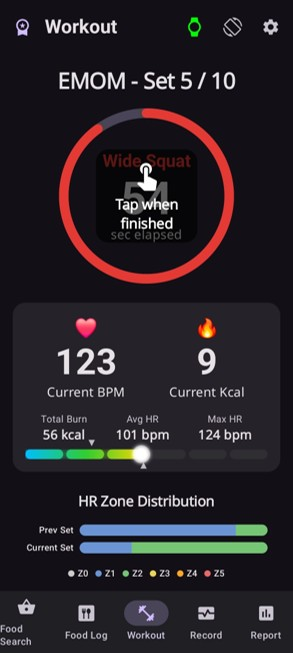
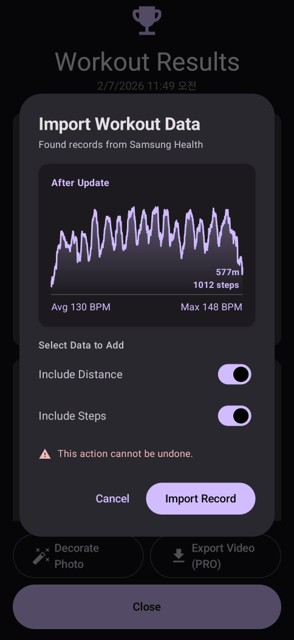
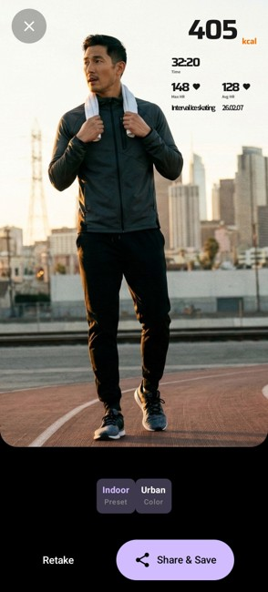
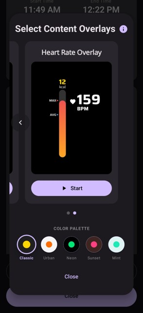
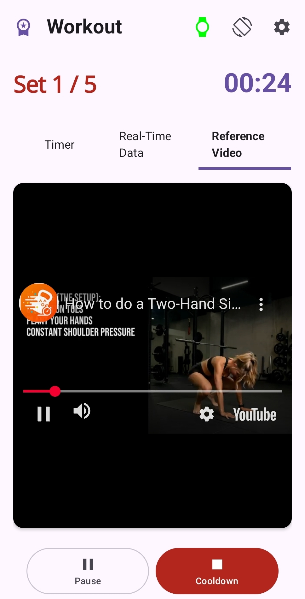

스마트 워치 연동 운동부터 바코드 식단 기록까지.
파편화된 피트니스 데이터를 하나의 플랫폼으로 통합합니다.





갤럭시 워치 등 Wear OS 기반 스마트 워치에
크로노핏 전용 앱을 설치하여 심박수, 소모 칼로리,
운동 강도를 실시간으로 완벽하게 연동하고 기록합니다.
설정된 HIIT 루틴에 맞춰 워치 화면에서
직관적인 운동 가이드를 제공받을 수 있습니다.
갤럭시 핏과 같은 스마트 밴드 및 다양한 피트니스 기기 사용자도
크로노핏의 전문적인 인터벌 트레이닝 기능을 동일하게 이용할 수 있습니다.
앱 내 타이머를 활용해 운동을 수행하고, 기기에 기록된 데이터는
헬스 커넥트를 통해 크로노핏의 시스템으로 통합(Data Fusion)됩니다.
통합된 심박수, 이동거리, 걸음 수 등의 데이터는
사용자의 인터벌 패턴에 맞춰 자동으로 세그먼테이션되어 분석되며,
체계적인 AI 건강 리포트를 제공받을 수 있습니다.
성공적인 훈련의 결과를 한 장의 이미지로 기록하세요.
운동 시간, 소모 칼로리, 심박수 등의 핵심 피트니스 데이터를
직관적인 오버레이 스티커 형태로 사진에 추가할 수 있습니다.
완성된 운동 기록을 소셜 미디어 플랫폼에 간편하게 공유하여
지속적인 성장을 위한 동기를 부여해 보세요.
제품의 바코드를 스캔하여 영양 성분을 손쉽게 기록하세요.
단순한 칼로리 계산을 넘어 탄수화물, 단백질, 지방 비율과
수분, 나트륨 섭취량까지 상세히 분석합니다.
하루 동안 소모한 칼로리와 섭취한 영양의 밸런스를 비교합니다.
체중, 골격근량, 체지방률 등 주요 건강 지표의
변화 추이를 한곳에서 직관적으로 파악하세요.
크로노핏(PRO)만의 강력한 시각화 기능.
운동 중 기록된 실시간 심박수, 타이머, 운동 존(Zone) 데이터를 영상 위에 오버레이 형태로 삽입하세요.
유튜브 커뮤니티를 통해 업데이트 소식과 버그 리포트를 확인하세요.
기능 요청이나 의견을 댓글로 남겨주시면 빠르게 반영합니다.